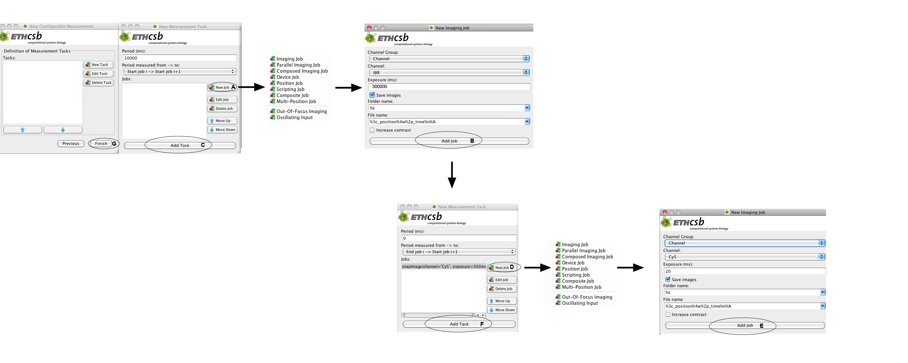
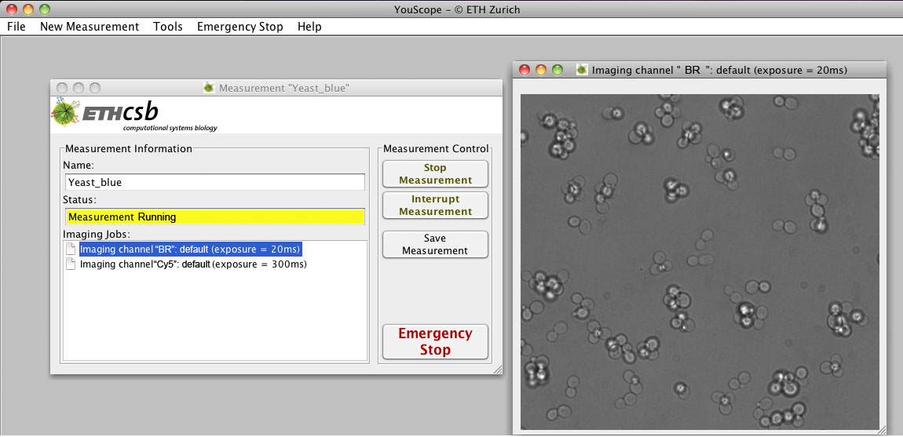

Example 2 - Advanced Measurement
A Measurement Method for the following Purpose
One measurement example is, to take every 10 seconds a blue fluorescent image of the sample and to make as many bright field images as possible between the blue images until the measurement is finished by the microscopist.
Set-up for the Measurement
(1) In Measurement Properties the name of the sample, the Output Directory and the image file type has to be given as well as how the pictures should be saved. For this measurement it doesn't make any difference if Folder Structure or All in one folder is chosen. In this case for Measurement finishes the option When stopped manually/after tasks finished has to be selected, that means that the imaging has to be stopped with clicking on Stop Measurement.
(2) In the next window, called Measurement Start and End Settings, nothing has to be changed.
(3) In the last window, called Definition of Measurement tasks, 2 tasks have to be created: For our microscope we grouped the channels for measuring red-, green-, yellow- images, or the bright field image in one group. We called the channel for bright field measurement BR and for the blue image Cy5. The optimal exposure times for our microscope and sample are determined as describe in Preparation of a Measurement in the section Coarse Adjustment of the Measurement. For the first task an imaging job with the option Cy5 in the Channel Group Channel and an exposure time of 300 ms have to be selected for blue images (A) and added to the task 1 (B). The period of the task 1 should be 10 s and fixed. This is defined by the option from start job i to start job i+1, where the period of the performance of the blue images by the microscope as well as the sending of the blue image jobs to the queue by task1 is equal and constant. Finally the task 1 is added to the task list (C). For the task 2 a job with the option BF in Channel Group Channel and an exposure time of 20 ms period should be selected for bright field images (D) and added to task 2 (E).
The variable period of the task 2 is 0 sec and is defined by the option from end job i -> start job i+1, where the time distance between the end of the BR imaging job and the sending of the next BR imaging job to the queue is constant, but the time period between sending of two BR image jobs to the queue is variable. The length of the period of task 2 is 0 sec, so that immediately after finishing every BR image, the BR image job can be send to the queue and later to the microscope, if the latter is not busy with executing the Cy5 imaging job. In addition the optimal exposure time has to be given for both jobs and the option Save images has to be selected. This task 2 is added to the task list (F). Now the measurement window is opened by clicking the option Finished (G), where the imaging can be started and stopped.

Execution by the Microscope
The imaging process and also the image quality can be monitored in the windows that are turned up by double-clicking on the image names in the field imaging jobs. At the end the microscope takes every 10 sec an blue-image and between the blue images as many bright field pictures as possible and can be stopped with Stop Measurement.

{kind=link}
{kind=link}
{kind=link}
{kind=link}
{kind=link}